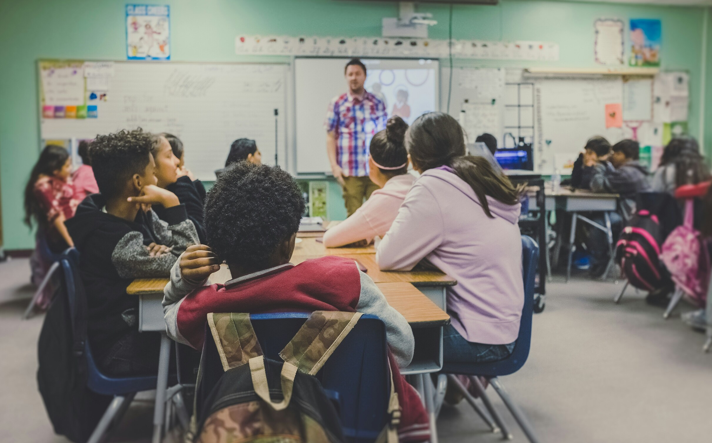
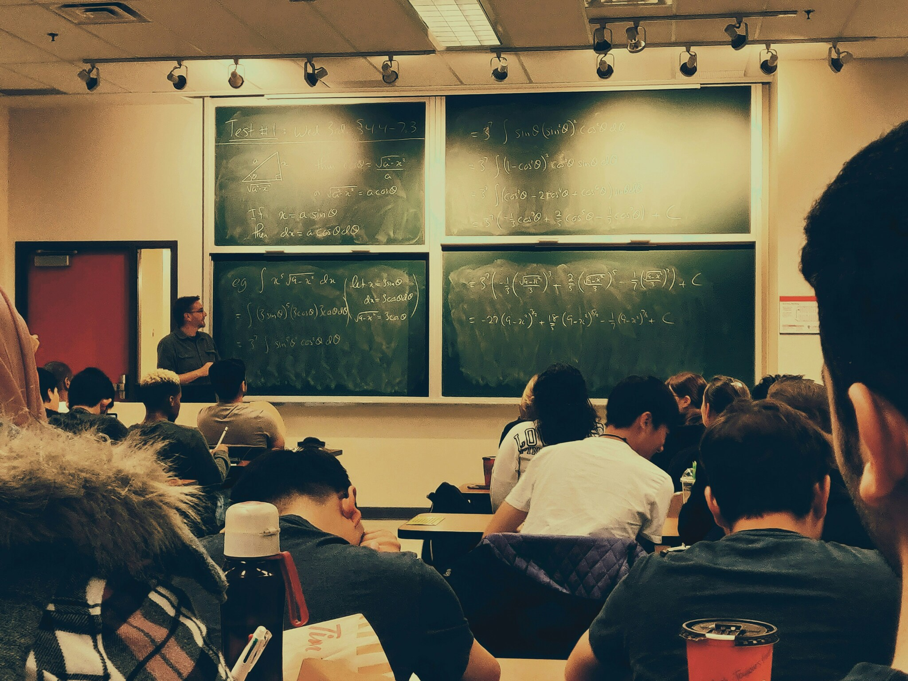
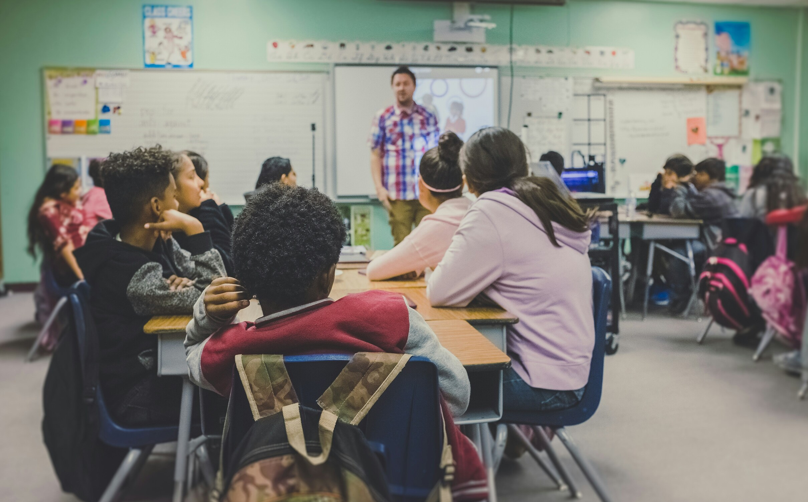
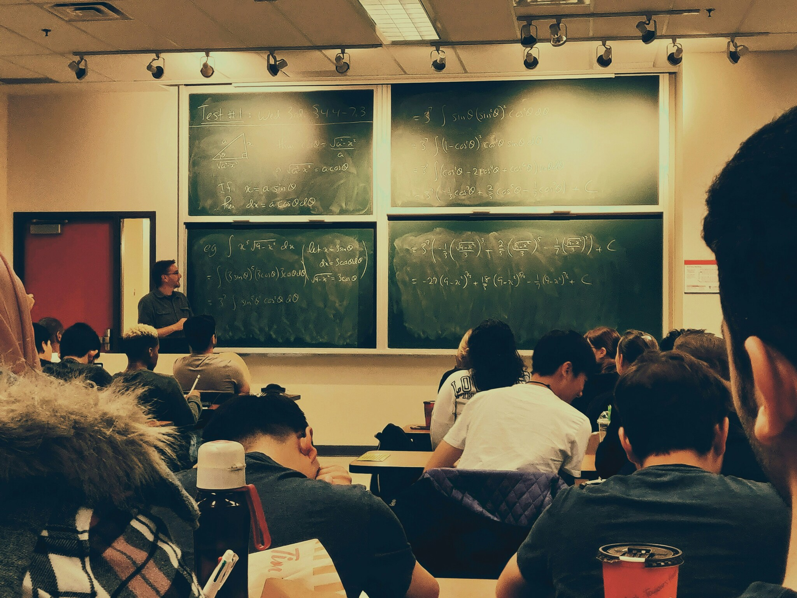

En el Nivel Inicial nos comprometemos a propiciar espacios que favorezcan el desarrollo integral de los niños, la estimulación de hábitos positivos y saludables de integración social, de convivencia grupal, de solidaridad, cooperación y respeto por la conservación del medio ambiente. Contemplando para dichos propósitos el desarrollo sensoriomotor y preoperatorio de los niños en esta etapa evolutiva, brindando herramientas necesarias para el cuestionamiento, la formulación de hipótesis y la comprobación de las mismas a través de la experiencia vivencial.
- Sala de 2 y 3 años: 13: 30 a 17:15 hs.
- Sala de 4 y 5 años: 13: 30 a 18:05 hs.
Incluye como áreas curriculares música, educación física y extracurriculares a expresión corporal, taller de psicomotricidad e inglés.